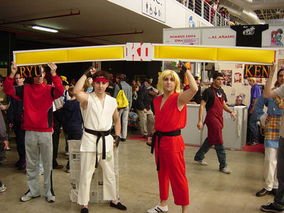

Street Fighter
 De: La Frikipedia, la enciclopedia extremadamente seria.
De: La Frikipedia, la enciclopedia extremadamente seria.

|
Este artículo necesita ser ilustrado. Busca una afoto en nuestro depósito de imágenes o donde sea y ponla, pero que no sea pr0n, que se cabrea el señor del adSense y nos corta el grifo de los dólare. Y sin dólare no hay servidor...
|
De la serie Videojuegos:
Street Fighter

| Desarrollado por:
|
¿Cascom?
|
| Distribuido por:
|
Hacendado
|
| Diseñado por:
|
Antonio Inoki
|
| Motor
|
de dos tiempos a gasógeno
|
| Género(s)
|
Collejas a cascoporro
|
| Fecha de lanzamiento:
|
de martillo
|
| Modos de juego:
|
*Sopapo a mano abierta *Sopapo a mano cerrada
|
| Requisitos:
|
2 brazos y 2 ojos (neuronas no indispensables)
|
| Disponible en:
|
tiendes de auto servicio
|
| Formatos:
|
Beta, VHS y Floppy de 5 y 1/4
|
| Edades:
|
desde bebes hasta viejos verdes
|
| Puntuaciones:
|
9, 9, 8 1/2 y 9
|
K.O.
También conocido como Estrífaiter (o Estril Faitel como diria el gilipollas de Calle 13), es el responsable de que muchos niños a principios de los noventa se dejaran la paga semanal en los recreativos. El juego consistía, básicamente, en meterse de hostias con el rival (virtual), lo cual podría acabar reventando a palos al rival (real) si al perdedor le entraba el telele tras perder la partida a dobles.
Básicamente fue el juego de CAPCOM que hizo que te desembolsaras de toda moneda de 5 duros que cayera en tus zarpas, y todo para jugar al juego de marras delante de una cola interminable diciéndote cómo se mata el malo mientras el macarra de turno, apoyado en la máquina con su cigarro, te decía "Chavá, ¿Quiereh que te lo passe?".
Hubo un primer Estrífaiter que todos parecen haber olvidado, porque todos recuerdan el Street Fighter II (también llamado Estrífaiter Dó). Este juego tenía a los siguientes personajes:
Personajes de Street Fighter 2
 Street Fighter se hizo muy popular porque es el juego de lucha mas realista de todos los tiempos
- Ryu Hoshi: un karateka japonés harapiento que quiere ser el más fuerte del mundo a base de que le partan la cara. Subsiste a base de ramen barato y cucarachas que encuentra en sus viajes. Se le insinúa un romance basado en el sadomaso (por eso de recibir trompadas) con su compañero de entrenamientos Ken. Se cree que ha masterizado el hadouken (típica bola de energía en plan kame hame ha, también conocida como "jaduken", "abuket" o "ayuken") gracias al perfecto control de su mal olor.
- Ken Masters: novio de Barbie (y, supuestamente, también de Ryu) y rubio teñido. Estudió con el mismo maestro que Ryu, por eso tienen casi la misma ropa (la de Ken es roja) y hacen los mismos movimientos a pesar de ser dos personas distintas. Más tarde marcaría sus propios movimientos usando fuego, lo cual explica el olorcito de sus ropas.
- Chun-Li Zhang: es una estudiante de Kun Fu. Cuando era pequeña, su padre se fue de parranda y jamás volvió. Quedo al cuidado de el mejor amigo de su padre, Gen, un maestro de Tai Chi. Chun Li desarrollo una relación "demasiado cariñosa" con su maestro padastro Gen. Al crecer Chun Li se da cuenta de que Gen es un pedófilo, por lo que libera a las demás alumnas y matá a su maestro mientras hacian el amor. Antes de morir, Gen le revela la verdad de su padre, lo que esta vinculado con el torneo "Street Fighter".
- Edmond Honda: propietario de la famosa compañía de coches y motos "Honda". Sumo y luchador profesional bajo el nombre de "Yokozuna". Siendo experto en sumo, espera pronto convertirse en un experto en otras artes como el "multiplico", el don de lanzar golpes múltiples a velocidad de vértigo. Su maetsro le reveló secretos sobre la física, por lo que puede dirigirse de cabeza a un objetivo a raz de piso.
- Blanka: mutación brasileña entre un humano y un chiche verde. Su pasado es desconocido, pero se afirma que fue víctima de un proyecto secreto fallido a manos de un tal Doctor Boskonovitch (véase Tekken). Debido a tener genes de chinche verde, emana hedores muy putrefactos, por lo que decidio retirarse a la Isla de Maracá del Sur. Blanka se entera por televisión de que otro caso como el suyo ocurre, pero esta vez a una mujer (apodada Blanko). Tras esto, se encuentra un tal General Bison.
- William F. Guile: piloto estadounidense por tradición, sus parientes han estado luchando en todas las guerras estadounidenses (hasta las Las guerras de ls galaxias. Su pelo desafía cualquier ley física habida y por haber. A pesar de odiar ser un Tom Cruise, es muy bueno en su trabajo. Antes de enlistarse, era un gañan típico de los '50: pasaba las luces rojas con su motocicleta y robaba a las ancianas; todo termino cuando fue abusado por miembros de la pandilla rival. La última misión que se le ha encomendado es la de encontrar a su superior, el Comandante Charlie, quien no regreso de un misterioso torneo
de homosexuales.
- Dhalsim: Apodado en la Indial como "El Patalarga" o "Motumbo", es un gurú que reveló los secretos del yoga, por lo que posee increíbles facultades como estrirar sus miembros
sexuales y escupir un terrible tufo. Entre sus costumbres están devorar a los lactantes enfermos, por eso las calaveras en el pecho. El miserable pueblo al que gobierna se contagío de una terrible infección sexual, por lo que entró al torneo "Street Fighter" para derrotar y follar a todos sus oponentes y llevarse el premio.
- Zangief: su verdadero nombre es Sergey Alexandr Ivanov (no es necesario señalar su procedencia). Al ser analfabeto, no posee conocimiento de los derechos laborales, por lo que desempaña trabajos forzados en la región de Sverdlovsk. Desde niño sintió un gusto por la lucha amateur, su sueño es pararse en un ring. Usualmente viste sólo con sus calzoncillos (que no se los cambia desde que Gorbachov se convirtió en presidente de la URSS). Es aficionado a Dschinghis Khan (la banda interprete de "Moskou", googlear). Entra al torneo al enterarse equivocamente de que Vince McMahon es el organizador.
Video en Youtube sobre la Historia de Zangief
Enemigos finales del Street Fighter 2
Los jefes finales, que después de lloriqueos varios de los fans pudieron elegirse en la nueva versión del juego Street Fighter II Champion Edition (o Estrífaiter Dó Edición Champiñón) eran:
- Mike Bison (en Japón)/ Balrog (en el resto del mundo), que no es más que Mike Tyson en su elemento: las peleas callejeras. Aún no sabemos si es verdad que tiene un movimiento que permite arrancar la oreja del rival de cuajo.
- Balrog (en Japón)/ Vega (en el resto del mundo), luchador español, torero,homosexual y ninja para más señas. Aunque se descubrió que no era Jesulín de Ubrique, Vega sigue siendo un sex-symbol allá donde vaya y los nenes se derriten ante su presencia.
- Sagat (a éste no le tocaron el nombre, no sea que se mosqueara ), un tailandés muy alto con un parche en el ojo, lo que hace sospechar que es un pirata. (ya que éste lo perdió en una pelea con el padre del payaso Dan de antes) y una cicatriz que se hizo jugando con Ryu. Nada más que quiere boxear al japonesito por la cicatriz..(De hecho en la india le da una paliza).y ser el mejor del mundo. ¡Éste es un hombre que ha conocido el sentido de su existencia!
- Vega (en Japón)/ Mike Bison (en el resto del mundo... ¡joder con los cambios de nombre!), también llamado Mr. Bison, Master Bison, Major Bison o Bison a secas, es el malo maloso del juego. Es un tipo vestido de militar rojo y azul. Mató a Nash (el amigo de Guile), al padre de Chun-Li (se aburría el pobre), se andaba tirando a Cammy (¡qué envidia!) y dice muchas groserías (caca, culo, pedo, pis y similares). Utiliza poderes psíquicos chungos, y con ellos hace que la gente vote a Izquierda Unida, aunque es un vendido y le hace honores a Francisco Franco. Lo normal, vamos.
Nuevos personajes para Super Street Fighter 2
Y los fans querían más, así que se añadieron más personajes para el Super Street Fighter II (o Chuper Estrífaiter Dó):
- Cammy Withe, una inglesa que está más buena que comer con la mano y que reparte piñas como panes. Está para mojar pan, es una luchadora equilibrada, está como un queso, trabaja para el gobierno británico, se parte de tan fuerte que está, sufre de amnesia y además fue de una de las primeras luchadoras en mostrar la famosa malla-tanga, ya que le gusta mucho enseñar el culo... ¿he dicho que es muy guapa?
- Dee Jay, un primo jamaicano de Eddie Murphy que siempre sonríe (total, se pasa el puto día fumando cigarritos de la risa). Hace una cosa que no se sabe si es cappoeira o kickboxing o resultado de una sesión de porros.
- Thunder Hawk, un nativo mexicano muy alto, muy musculoso y muy lento. Eso sí, el tipo no tiene un pelo de tonto, ya que va por Bison (el militar) porque le dejó a su tribu sin hogar (y construyeron una urbanización donde antes tenían sus chozas)... y porque Bison le debe mil pesos de sus domingos en el bingo. A pesar de ser mexicano, tiene nombre inglés.
- Fei-Long, uno de tantos clones de Bruce Lee, se dedica a imitar al gran maestro de las artes marciales incluso en los grititos. Se cree que estudió en la misma academia que otros célebres clones como Liu Kang, Kim Dragon y Marshall Law, donde no sólo te enseñan a hacer patadas voladoras guays, sino a ponerte pinzas en los güillos para gritar como Bruce (si bien el Maestro Lee, que en paz descanse, nunca necesitó de esos trucos tan baratos). Cuando conoció la derrota de su maestro Bruce Lee a manos del todopoderoso Chiquito de la Calzada, entrenó en secreto para aprender la patada giratoria de tan gran hombre. Tras 234 años lo consiguió a la perfección, pero al cometer tal acto, su pierna estalló, teniendo que implantarse una pierna con un mechero incorporado, para que estallara en llamas y causase más daño.
- Gouki (en Japón)/ Akuma (en el resto del mundo... ¡la siguen liándo con los cambios de nombre!). Era hermano del maestro de Ryu y Ken y, como es obvio, tiene las mísmisimas técnicas que ellos dos aparte de ser más fuerte y puñetero. Tiene un ataque llamado "El demonio encabronao" (Shun Goku Satsu) que como te agarre te envía al camposanto sin pensárselo dos veces. Es un auténtico borrico, y hace hadoukens hasta saltando, lo que hace que sea más peligroso que una piraña en un bidet.Tiene un rosario budista, aunque no parece muy encaminado a la iluminación que digamos...
Street Fighter Alpha
Se están columpiando con tanto personaje, ya ni se ve el mapa del mundo mundial
Estrífaiter Alfalfa es una pequeña saga que se sitúa entre Estrífaiter y Estrífaiter Dó, donde salen Ryu y Ken más jovencitos (y ahostiables), Chun-Li en chandal y algunos cuantos cabritos más, como por ejemplo:
- Charlie, Nash en Japón, es el mejor amigo de Guile. Siempre muere en todos los juegos donde el aparece.
- Rose, versión "tía güena" de la bruja Lola, se dedica a echar las cartas a todo el mundo y le quiere poner dos velas negras a Bison. Resulta que, en verdad, es la parte buena de Bison, por lo que es normal que en la conciencia del militarucho sólo salga el demonio ese.
- Dan Hibiki, quien, como ya se ha comentado anteriormente, es un perdedor nato y payaso a tiempo completo, maestro a la hora de hacer burlas y el gilipollas. Debido a su manejo de las burlas, se dice que "Dan Hibiki es como Goku, pero con burlas en vez de kamekamehas". Por supuesto, nadie se cree semejante gilipollez. Dan entrenó con Ryu y Ken, pero lo echaron porque era tan gilipollas que no era capaz de hacer que sus hadoukens llegaran más de 1 metro.
- Gen, una especie de señor Miyagi chino, supuestamente un asesino. Este viejo debe de haberse pasado la tercera parte de su vida entrenando, y las otras dos terceras partes moviendo el Joystick como un loco para hacer sus movimientos especiales tan vistosos, que en realidad solo sirven para exponerle a otros ataques. De tanto recibir palizas de luchadores de la talla de Dan Hibiki, ha acabado pillando leucemia. (¿?)
- Sakura Kasugano, tambien llamada Sakura ¡Que-Gusano! es una niñata obsesionada con el idiota de Ryu, por lo que, al igual que él, quiere ser más fuerte a base de que le ahostien a base de bien. Y sí, a esta chica le va el sado. Enseña la bombacha a la primera de cambio, y los hadoukens no le terminan de salir demasiado bien, se cree que quiere sodomizar a Ryu.
- Guy salía en otro juego de CAPCOM, el Final Fight, donde ayudaba a rescatar a la novia de su amigo Cody, la cual es además hija de Mike Haggar, alcalde de Nueva York... digo, Metro City. Es un ninja con bambas, con lo que directamente se convierte en el mejor luchador del mundo. Y no hay más que decir. El juego en el que sale si no lo elegias te pegagaba una somanta de palos cuando te tocaba luchar con el, que no veas.
- Karin Kanzuki, nueva del estritfaita arfa 3, es una niña pija, mimada y consentida. Va a todos lados con su mayordomo porque tiene tendencia a mearse encima y este le lleva la ropa de repuesto. Rival de Sakura, en realidad lo que le tiene es envidia por tener el culo mas pequeño y asi poder enseñar la bombacha continuamente. Es también conocida como "La Incrustadora", debido a que sus fuertes golpes de palma que han incrustado la nariz en el craneo de más de uno. Es la envídia de Paris Hilton y otras petardas mantenidas similares ya que Karin posee nada más ni nada menos que un satélite espacial, en el cual se monta fiestas y orgías de mucho cuidao.
Street Fighter 3
Ahora también en la vida real, yeah.
Estrífaiter Tré, por su parte, se sitúa después de Estrífaiter Dó, con Bison muerto y re-muerto y con más gente a la que partirle la cara. Ejemplos:
- Alex, que por sus pintas tiene que ser el primo rubio de Rambo, iba a ser el protagonista de Street Fighter III (Estrífaiter Tré), pero los niñatos querían que volviera Ryu y se salieron con la suya. Ahora su misión en esta vida es romper unas cuantas rodillas de fans de Ryu que le han robado el sueño de su vida.
- Ibuki es una ninja, o kunoichi, para los puristas. Lanza kunais, hace cosas raras con el humo... si pertenece a alguna de las aldeas del Naruto ese, es algo que desconocemos (pero no nos extrañaría que fuese así).
- Oro: es un viejo manco (por mucho que él diga que "el brazo que me falta lo he sellado para dar oportunidad a mis rivales": ¡abuelo, admita que es manco!) que debe proceder de la misma época que Fraga (aunque hay quien dice que Fraga es mucho mayor que él). Se pone a entrenar a Ryu cuando ve que al muy idiota lo tienen tan inflado a hostias que el chaval ha perdido las ganas de que le sigan pegando. Según cuentan, se pega unas siestas de 30 horas que le han dejado amarillo.O es un simpson no-reconocido.
- Gill: Un fanático Mel Gibson que decidió hacerle tributo y pintarse como "William Wallace" en Corazón Valiente. Como es un metrosexual fue expulsado de la Iglesia Católica así que fundó su propia secta: los Illuminatium, de la cual obviamente es el Líder. La secta esa lo hizo llenarse de dólares al punto tal que su culto religioso pasó a ser una empresa multinacional que cotiza muy bien en Wall Street, y por eso el hermano de Gill, Urien, decidió quedarse con las acciones mayoritarias y robarle el negocio. Para evitarlo Gill usó sus poderes de líder sectario y adquirió habilidades y superpoderes religiosos como la Resurrección de Jesús, y hasta le salen seis alas como a los Serafines del Libro de las Revelaciones. Con esos poderes derrotó a Urien y va por mas: quiere demandar a Dan Brown por sus pseudo-novelas ateas, pero por ahora se conforma con ser un subordinado más de Hasecorp (sí, esos compran lo que sea). Por si no lo notaste, este grandulón es el Jefe máximo del juego Estrit Faiter Tri, y por eso es el mas maloso y poderoso.
- Necro
filia: su verdadero nombre es Illia y es un posible fruto de una relación homosexual entre Dhalsim y Blanka. Se puede decir que es Dhalsim pero azul cual pitufo (es calvo, tiene la cara pintada, también se estira, da vueltas en el aire y es mas lento que un caracol muerto). Además puede soltar descargas eléctricas como Blanka y es que los chicos de Capcom son super-hyper-megaoriginales.
- Elena: La clásica hija del jefe de una tribu africana (negra, puta, buenas tetas y un super culo) quien para salir de sus deudas de juego la saco de su pueblo y la mando a las calles de Francia a
putear estudiar medicina y sacarle algo de pasta, pero como la tía de cae buena y siempre busca hacer amigos queda claro que es una puta, se dedicó a follar a cuanto ser pasase frente de ella sin cobrarle un duro. La falta de una buena polla la llevó a pelear en las calles donde ofrece sus servicios cada vez que es derrotada. Actualmente ha sido follada por todos los manporreros de Capcom y algunos de las compañías rivales.
- Sean Matsuda: Por el nombre parece yankee, por el apellido parece japonés, pero en realidad es un negro brasilero que pelea casi tan mal como Dan Hibiki. Es el alumno de Ken, y a pesar de que es brasilero no sabe jugar al futbol ni aprendió Kapoeira (porque parece que los japoneses que lo crearon no tienen ni puta idea de lo que es Brasil, y se creen que todos los negros son jugadores de Basketball que escuchan Hip-Hop, y no es así, los brasucas juegan futball y oyen samba y reggaeton).
- 12: Este fue el doceavo personaje en ser introducido y por eso ni se molestaron en ponerle nombre. "Twelve", "12", o como se llame, es un bicho todo hecho de goma que parece ser unicamente un monton de caucho blanco. Tiene forma humana pero como se estira como chicle (aun mas que Dhalsim) puede convertir sus extremidades en armas, o estirar su piel para tener membranas que le permiten volar, y tambien puede hacerse invisible y hasta adoptar la forma de otro personaje y usar sus habilidades. Así pareciera que fuera invencible pero en realidad tiene sus defectos: es retrasado mental y por eso no aprendió a hablar, y como se la pasa frente al PC todo el día, el único lenguaje que aprendió es el lenguaje binario, y por eso todo lo que sabe decir es 101010101010100101010111100010100, o sea que ni siquiera es capaz de pronunciar su propio nombre (12).
- Urien: Es el hermano mayor de Gill. Es un empresario mexicano de piel blanca y cabello rubio, pero como sabemos, no hay mexicanos blancos de cabello rubio, y por eso cuando pelea se quita el maquillaje y vemos que es un mulato canoso que pelea en tanga como lo hacían los antiguos mayas. maneja muy bien la electricidad pero lo único que no pudo manejar es la empresa sectaria "Illuminatium", compañía a la cual perdió y quedó en manos de su hermano menor Gill, y por eso Urien está cabreado y termina secuestrando a Gill y encerrándolo en un tubo para criogenizarlo.
- Remy: Es un asexual anarquista fanático de Pierre-Joseph Proudhon. Odia a todos los luchadores porque su padre era luchador y los abandonó a él y a su hermana cuando eran pequeños. Como no tuvo una figura masculina en su casa, no se volvió machista y por eso no desarrolló una sexualidad normal, pero la única mujer a la que le tuvo ganas es a su hermanita menor (y quien no), pero ella murió y está congelada bajo las heladas aguas del mar. Remy es un asexual que tiene sexo con su hermana; un luchador que odia a los luchadores, un francés que odia a los franceses, y un anarquista que vota a los comunistas: en resumen, es un completo hipócrita.
- Hugo Andore: es un gigante alemán que simpatiza por la extrema derecha. Los nazis lo hecharon del partido porque estaban cansados de que él se vista de rosa, pero el no quiso cambiar porque ese es su color favorito (lo que indica que es un homosexual reprimido). Luego de salir de la cárcel quedó bajo libertad condicional y vive bajo custodia en el departamento de su amiga Poison, una puta policía de cabello rosa que está mas buena que Scarlett Johanson y Hillary Duff juntas. Poison tiene sexo sadomasoquista con Hugo para que el grandulón se ponga violento, y así con esa furia se pone a pelear con Alex y gana dinero en los clubes de peleas clandestinas.
- Dudley: El único negro aristócrata conocido por la historia, fue el resultado de la afición de su padre por follase a las negras gordas de la cocina de su mansión, al crecer Dudley se encontró excluido de los coles donde estudió al ser el único negro del lugar, el rechazo de todas la tías del lugar le hizo desarrollar una afición extrema por los los puteros llenos de rubias y gastar grandes cantidades de pasta en una noche, con el tiempo esto lo llevó a la ruina, actualmente se dedica a fregar pisos y losas, sueña con recuperar el coche de su familia en posesión de Gill para cumplir su sueño dorado y aplicarse la operación de cambio de
sexo color de piel patentada por Mickel Jackson.
- Makoto Tsumura: La típica marimacho lesbiana que es mas ruda y mas fuerte que cualquier hombre duro. Es experta en Karate porque fue entrenada por su padre Masaru, y ella entró al torneo de Street Fighter para intentar hacer famoso al Dojo de su padre, que en paz descanse... o al menos eso es lo que dice, pero en realidad el verdadero motivo por el que entró al torneo es para conocer luchadoras sexies como Ibuki, Elena, y Chun-Li, y obviamente intentar tirárselas, o cuando menos tocarles el culo y las tetas mientras están luchando aparentando que nomas son "movimientos dentro del combate", y no alguna otra cosa... No se sabe si logró ligarse a alguna de las chicas, pero con Ibuki se bañaron juntas despues de la pelea así que suponemos que ahí si hubo algo. Con Chun-Li y Elena probablemente no pudo tener sexo porque ellas dos ya estaban muy ocupadas haciendo lo suyo...
Y hay muchos más, pero no me da la gana de ir listándolos. :P
Street Fighter 4
Y bueno, llegamos al año 2009 cuando tiene lugar la cuarta entrega de este torneo, con nuevos aspirantes al linchamiento supremo:
- Crimson Viper: Una zorra bién cachonda que es una agenta del y que intenta mandar a tomar por saco el campeonato de Bison, lo curioso es que antes de entrarse en la CIA, se some´tió a un concurso regional de Hentai, y asi de hermosa se quedo, aunque ultimamente, se suele liar a coces con la hermosura de Chun Li, no es especialmente porque sean rivales eficaces, sino por que Chun-Li tiene la culpa de que quedase finalista en el concurso, y ella quedase primera. Le gusta llevar su corbata entre las dos melones.
- Abel: Un franchute apuntado por obligación por el joputas de Nicolás Sarkozy para demostrar que los franceses también dan ostias como panes. Definiendo: Un personaje de relleno.
- Rufus: Un gordinflas tó obsesionaíto con Ken, que le busca para no sé qué, bla, bla, bla...
- El Fuerte: No es nada más y nada menos que una copia barata de Rey Misterio, eso sí, por lo menos sabe cocinar. Como a Thunder Hawk para esta edición no lo dejaron participar por demasiado larguirucho y violento, apuntaron a este otro mexicano más bajito.
- Gouken: Es el mitológico Maestro de Ryu & Ken. Durante décadas todos querían saber quien carajo les enseñó el Hadoken al japonesito y al gringo rubio y por fin Capcom decidió develar el misterio. Este tío Gouken es un viejo nippon muy fortachón con un cuerpote al estilo del maestro Roshi cuando se pone duro, y una melena cana y unas barbas largas como las de Gouki, que resultó ser Shintoísta, pero lo mas dramático de la historia es que Gouki es el hermano menor de Gouken. Desde entonces Gouki se cambió el nombre a Akuma para que la Interpol no lo encuentren y lo arresten por el asesinato de su hermano mayor.
- Seth (el malísimo del SFIV)SETH - Sociedad Española de Trombosis y Hemostasia. Una copia barata de Tyrant del Resident Evil.Es el malo + malo del SFIV. Violo a Bison y a sus
putas secuaces. Se ha metido genes de todos los demás luchadores y encima se mete sabe dios que droga pa tener la piel toda plateada. No tiene nabo, en la barriga tiene una esferita que absorbe cosas, aunque él la prefiere usar como cubo de basura.
Super Street Fighter IV AE y demas
No bastando con solo Street Fighter 4, y ante el lloriqueo de tanto gamer (y con el verdadero objetivo de sacarle mas dinero a su fanaticada), Capcom decidió lanzar la versión Super de Street Fighter 4 y posteriormente la versión Arcade Edition, (la misma que juegan todo esos asiáticos con cara de enfermos), y para que no te quejes de que es la misma mierda cosa, vuelven viejos personajes y se nos introduce, (cosa que seguro te alegra pinche marica), nuevos personajes al universo de hadoukens, patadas, puñetes, peleadoras con pinta de todo menos de peleadoras y personajes tan raros como usted comprenderá mi querido friki. Aquí vamos con los 2 nuevos y los otros que son más o menos conocidos solo que con aspecto y ataques diferentes.
- Juri Han: Corea del Sur, (porque en la del norte nadie gusta de gilipolleses como videojuegos y el pasatiempo favorito es rendir tributo al supremo líder Kim Jong Il), es uno de los países como mas “gamers”, (frikis sin vida), por tanto la fanaticada pidió a gritos (y suplicas) un personaje coreano. Capcom decidió darles el gusto (y para calentar mas a estos coreanos frikis), pusieron a Juri Han, una experta en el arte marcial oficial coreano Trae Con don. Juri gusto desde el comienzo, con su peinado raro, su pantalón transparente en las áreas que más gustan a todo hombre, un corpiño en forma de araña junto con un par de buenas teteras, algo raro en coreanas y una personalidad ultra super hiper cachonda y sadica. Su gusto por torturar a sus rivales y decir frases en doble sentido como decirle a M.Bison que “se lo va a comer con huesos y todo”, (lo último es real y lo puedes comprobar si juegas en arcade mode con Juri), la han hecho muy popular entre fanáticos del hentai y las fantasias de todo friki gamer aguantado. Sin embargo para cubrir algo de su historia, que es a lo que vamos, Juri nació en Corea del sur, desde chica le partia la madre a medio mundo y sus padres no tuvieron mejor idea que meterla a estudiar Tae Kwon Don, o como se escriba. Juri se hiso campeona nacional juvenil y nadie le podía ganar ni con trampa. Los padres de Juri, (como de costumbre en todo video juego de street fighter) fueron acribillados por los malotes de Shadaloo(Organizacion Terrorista de Bison), mientras la familia volvía de compras navideñas, el auto “sufrió un accidente”, cuyas causas se desconocen, según la policía, pero todo el mundo sabe que fue la gente de M.Bison, solo que se hacen de la vista gorda porque nadie se quiere meter en problemas con alguien de poder. La pobre Juri sobrevivió, solo que se quedo tuerta y algo mal de la cabeza, le daba por pelear con cualquiera, calentar a cualquier gilipollas para luego sodomizarlo y se dedico a una vida llena de salchichas y (lo que escuchen los coreanos)rock and roll. El nuevo malo del juego, Seth, Jefe de SIN, una ONG que al igual que muchas busca la paz mundial, (si como no), recluta a Juri después de ver su tremendo
culo y tetas potencial, y le ofrece un implante para su ojo, para que deje de usar un parche a lo pirata, con Sagat ya hay suficiente. Este implante a parte de verse como un ojo normal contiene el motor feng shui (o feng shui engine en ingrish) y activa en juri poderes sexuales para manipular el espacio/tiempo, algo tipo sharingan de naruto, para los mas puristas es algo como lo que tiene seth en su panza, solo que juri lo tiene en el ojete ojo. Seth manda a Juri a que le pruebe la polla pruebe el implante en batalla, y que mejor manera que liándose con la buenota de Chun li, después de darle una paliza a la chinita, Juri le dice que otro dia volverían a jugar y que para la próxima se vista de colegiala (joder con el cosplay). Chun Li quedo tan mal que la mandaron al hospital y no se recupero por buen tiempo y solo se dedico a observar todo desde su facebook. En tanto, Seth manda nuevamente a Juri a que haga de las suyas esta vez en contra de lo que queda de Shadaloo y capture a las dolls, que eran las esclavas sexuales guardaespaldas de M.Bison, las pobres dolls son todas sometidas sexualmente y capturadas por Juri sin mucho esfuerzo. Cammy, quien fue una “ex doll”, va a tratar de parar a Juri, pero ella al igual que el gilipollas de Guile no son rivales para tremenda hija de puta peleadora, ambos dan vergüenza ajena y dejan que Juri se escape. Despues de todo, Juri le dice a Seth que ya se aburrió y quiere mas acción, deja la organización SIN y vuelve a hacer lo que mas le gusta, calentarle la polla a cualquier aguantado, para luego robarle y sodomisarlo. Se comenta que Juri vaga cerca de varios distritos de luz roja, aprovechándose de pobres incautos que terminan muchas veces cambiándose de bando, como usted comprendera.
- Hakan: En su afán de inclusión mundial, Capcom decidió meter un personaje del medio oriente, como Iran, Jihad en contra de Capcom si ponían un personaje con alguna de esas nacionalidades, los tios de Capcom pusieron un turco. Resulta que el buen “Hakan” es presidente de una compañía que se dedica al comercio de aceite comestible, no petróleo como se pensaría, y a su vez el máximo representante uno estilo de lucha (que nadie conoce y que a nadie le importa) en el cual se echa aceite en el cuerpo. (Por si no sabias este tipo de lucha si existe y es popular en Grecia y otros sitios medios raros). Sin embargo esto no hace que el buen Hakan quiera demostrar que es el mejor en su estilo de lucha, (como no va a ser el mejor si tal vez sea el único que lo practica) y a su vez viajar por el mundo buscando una mejor receta para hacer aceite (que original). La suripanta de C. Viper, (la C es de Conchita y es solo para las amistades cercanas), es enviada para ver si hay potencial en Hakan para reclutarlo como agente secreto, pero al encontrarlo se decepciona completamente, al ver a este bicho rojo, cubierto en aceite y con un acento que lo hacía prácticamente inentendible a la hora de hablar. Despues de
electrocutarle los huevos a Hakan una breve pelea, C. Viper desaparece tan rápido como apareció y reporta que perdió tiempo y dinero visitando a un turco raro y mal oliente. Hakan está casado, (por si tenias alguna esperanza), y tiene 7 hijas que parecen la fusión de bomberman y una marciana verde. Es amigo de E.Honda y ambos luchan de vez en cuando, (dos machotes cubiertos de aceite), para fortaceler su amistad homosexual y para intercambiar a sus mujeres recetas de cocina. Hakan fue recibido de manera regular por los fans (niñetes), pero es considerado un personaje al estilo de Dan Hibiki aunque no tan patético. Hakan actualmente se dedica a atacar a cualquiera que se acerca a su casa, ya que parece que varios le tiene la mira puesta a su mujer, que pese a haber dado a luz a 7 hijas se mantiene regia y culeable divina. La excusa de Hakan para golpear a la gente es que le quieren robar la receta de su aceite, pero todos sabemos cómo son de celosos algunos hombres con sus mujeres y en especial los arabes, jajaja.
- Yun y Yang: Dos Gemelos
como las bolas de todo varón provenientes de Hong Kong y por ende practicantes de artes marciales, comedores de ramen y (todo lo demás por lo que los asiáticos son estereotipados) peleadores callejeros a tiempo completo que buscan proteger su barrio de cualquier indeseable que se asome a causar alboroto y a follar coquetear con las tias del lugar. Aperecen primero en Street Fighter 3, al comienzo eran la misma mierda cosa, como Ryu y Ken en los primeros Street Figther, pero con el pasar del tiempo cada uno adquirió sus propios gustos y ataques. Yun se moviliza en su skateboard, como todo adolescente (sin dinero) skater, y Yang usa patines en línea para impresionar a las chavas del lugar (y sacarse la mierda intentado trucos). Sin embargo ambos tienen fama de ser raros por la forma en que se visten. Trataron de seducir a Chun Li, pero esta los mando a comprar pan y después de ver como peleaba la chinita, se olvidaron de afanarla por temor a que la Chun les rompa los huevos la cara a patadas. Pusieron un puesto de ramen, con mediano éxito, Naruto y otros que gustan de ramen barato son los principales clientes, de vez en cuando les cae Chun Li, a quien no le cobran por que cada vez que se aparece no lleva tanga le da prestigio al lugar y con su presencia levanta las ventas (y algo mas entre la clientela masculina). Como dato final (por si te importa), Yun y Yang son nietos de Lee, un personaje de el primer Street Fighter y si has visto Gundam Wing, Yang es una copia de Trowa Barton y Yun de Duo Maxwell, quien se copio a quien?, eso te queda de tarea.
Otros juegos
Después de Estrifaiter aparecieron juego-cosas como Fatal Fury (Fatalfiuri), World Heroes (Guorld Jirous), Mortal Kombat (Mortarcomba), The King of Fighters (KaOeFe), Tekken (erteken) y similares.
Sabias que...
- ...en 1994 salio una pelicula de Jean Claude Van-Damme basada en el juego?
- ...y a nadie le gustó?
- ...salio un videojuego basado en la pelicula?
- ...y tambien fue un fiasco?
- ...Cammy Withe?
- ...pasaron casi 20 años y todavia no se sabe de que nacionalidad es Vega/M. Bison?
- ...hace casi 10 años que Capcom no saca un nuevo juego de la saga?
- ...en el año 2009 ya se dignaron a sacar el cuarto título de la saga?
- ...pero resultó que no es la secuela del tercero, sino la secuela del segundo pero precuela del tercero?
- ...y la liaron bastante porque le pusieron Street Fighter IV a pesar de que no es continuidad del III sino sucesion del II?
- ...y como es una subsaga como Street Fighter Alpha entonces deberian haberle puesto Street Fighter Beta?
- ...hay peliculas de anime de Street Fighter?
- ...y contienen unas escenas de Chun Li en la ducha mostrando las tetas?
- ...y tambien muestra el culo?
- ...y si quieres saber que mas muestra deberías ver la película?
- ...Dan Hibiki es una burla a Ryo y Robert de King Of Fighters?
- ...Chun Li esta loca por Ryu, pero este esta tan ocupado en pelear que ni se enteró?
- ...Ryu puede hacer Hadoukens de fuego si come el mismo chilli que Scooby Doo?
- ...Tengo el logro de La Gran polla?

|
Logro Desbloqueado
La Gran Polla - 50 G
Mata a Cammy sin tener las ganas de follartela
|
Enlaces Externos
|
|
 Shooter Shooter
 Terror Terror
 Velocidad Velocidad
 Rol Rol
 Estrategia Estrategia
 Aventuras Aventuras
 Fight! Fight!
 Clásicos Clásicos
 Deportivos Deportivos
 Aventura gráfica Aventura gráfica
 Novela visual Novela visual
 Personajes de videojuegos Personajes de videojuegos
|
Autor(es):
- Krusher
- Nexo
- Cortocircuito
- Hari Seldon
- Tomas jirch
- Huds
- MURO DE AGUAS
- Aque
- Lord Jedah
- Roms
Frikipedia 2005-2016, Licencia
GFDL 1.2 - Extraído por FrikiLeaks